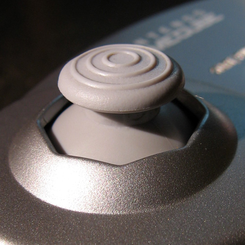
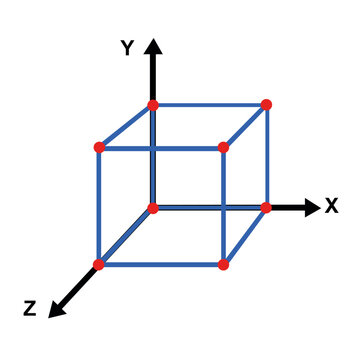

Speedrunning

Glitches are a staple of speedrunning. These can range from simple infinite stamina to arbitrary code execution - the most powerful glitch in any game (this allowed SethBling to complete Super Mario World in just under 6 minutes). A glitch is a minor malfunction in the code, but the meaning of minor can stretch quite far.
These are all examples of glitches, and the reasons in why they work can range from a simple logic error in the code to a missed exploit that completely confuses the game into producing a completely unexpected result. Understanding the cause of said result is typical for glitch hunters who delve deep in the game's code to understand how and why the glitch occurs. A deeper understanding results in more ways to abuse the glitch and discovering more uses for it. Almost every game has a glitch in it, all working in different ways, but for the glitches named above, an explanation shall be given, to give you, the reader an insight into how these glitches, and many others, work.
Given a rather simple name, item sliding is currently one of the most powerful glitches that exists in The Legend of Zelda: The Wind Waker HD, allowing Link (the character that you play as) to gain infinite amounts of speed at exponential rates. By aiming an item that forces you into first person mode and that also allows you to move around(such as a boomerang, bow, grapple, or a hookshot), moving in this state, and then moving extremely slightly in the exact opposite direction, Link will gain exponential amounts of speed in the original direction that Link was moving. This is extremely difficult to pull off in consecutive frames, so speedrunners typically make it easier by pausing between the changes in directions. This gives them time to input in the correct angles of the analog stick. After -45 speed, the analog stick  A stick that records two-dimensions of movement can be released and the slide will continue to automatically gain speed.
Once the player reaches the maximum float (a decimal number in programming) size () in either the positive or negative direction, the value of the speed does not increase further. There was a hidden check implemented by the developers such that if the player's position is larger than positive or less than negative on any axis  , the game is forced to crash.
For the purposes of the TAS, an equation was derived to accurately achieve relevant and useful speeds. This one is used when the analog stick is neutral:
If the speed is negative, then a special case exists if the analog stick isn't neutral:
The Cappy return cancel (or CRC for short) allows Cappy to teleport to virtually anywhere when playing in two-player mode. If Cappy teleports onto a checkpoint flag, an enemy or object that can be 'captured' (a mechanic in Super Mario Odyssey where the player can use Cappy to control these objects), then Mario is able to or will teleport to that location, allowing the player to access extremely far away locations that they shouldn't be able to, hence allowing sequence breaks, and making certain categories, like Minimum Captures Any%, to reach new heights and achieve even more insane records.
When Cappy is extremely far away from Mario, he will start moving back towards Mario. In two-player mode, Cappy can freely fly around so long as he is not too far away from Mario horizontally. If he is prompted to return to Mario, or if the player controlling Mario presses either X or Y on the controller or shakes their controller, Cappy will begin returning to Mario. If he is obstructed by an obstacle, or if it has been already been 3 seconds that Cappy has been flying, then he will teleported back to Mario's side, at which point the plumber will place his friend upon his head.
This action of Cappy teleporting back to Mario can be cancelled by Mario doing one of the following actions:
The location of which Cappy teleports to when Mario uses when of the 3 inputs is determined using a geometric rule as shown in the image on the right. One way of understanding is imagining that there is a sphere where the diameter is the line made by connecting Mario and Cappy. When the CRC is activated, the point where Mario's view ray intersects the sphere is the position that Cappy teleports to. This can also be expressed mathematically:
where:
If a movement direction is being held on Cappy's controller, then the facing direction will instead be rotated onto the plane of which Mario is standing upon.
This trick is also called a Wall Clip, executed by a exploiting a series of cut corners in the code for the Super Mario Bros. on the Nintendo Entertainment System. Due to the limited storage capacity, the game had to be made as small as possible, and as such, any trick they could use to limit the code size would help, to squeeze in more bug fizes and textures.
When Mario moves, the two textures for the walking animation means that Mario moves either 2 or 3 pixels on the 16 pixel grid (16 pixels makes one block, and is also Mario's size when he is small) This means that one frame, the player can be right next to the edge of a block, and then on the next frame, they can be 3 pixels inside of the block. To counteract this, the game tries to push Mario out of the block. However, one of the corners that were cut was here. It was assumed that the player would always be moving into the edge of a block and hence, the game can take the input direction and reverse it to push the player out of the block. In the case of the Wall Clip, if the opposite movement direction is pressed (left), then the game pulls Mario into the block, allowing the player to stand inside of the block. If on the first frame that the player lands a jump input is pressed, then the game never recognises that Mario is in a standing state and keeps sucking in the player into the block. If this was not done, then when the game realised that Mario is standing, it would check which side of the block Mario's sprite is hanging out off, and would then push the player out in that direction, regardless of the input direction.
Once Mario is fully inside the block, the game is no longer able to determine which side it should push the player out, and since the end of the level is on the right, it starts pushing Mario in that direction, and the player can start running in that direction, inside of the block. And hence, the glitch is complete. As can been seen, this glitch can only be done on walls on Mario's right, since it requires the game's assumption to allow Mario to move.
While on this list, Pie Ray is not actually a glitch but rather a technique created by the Minecraft Speedrunning community to scan the environment around them and essentially see through walls, all while using the built in pie graph in the debug menu of Minecraft Java Edition. The pie graph is easily accessible in Minecraft, simply requiring that one hold down the shift key on their keyboard along with the F3 button. This opens up the standard debug window, with the inclusion of the pie chart (the shift key is required to enable the pie chart view).
Once open, the player can navigate to either the entities or blockEntities subcategories by using the relevant numbers to access further subsections. Next, by increasing and decreasing the render distance, one can load or unload more chunks of the game. By paying attention to when the relevant entities enter the pie chart, the player can speculate roughly where the entity is. By moving to nearby chunks, and checking whether the chunk count that was needed for the object to load into memory was higher or lower, one can ascertain which direction to go in to find the entity.
This is especially useful in the Nether (an alternate dimension in Minecraft), where visibility is heavily blocked. The aim while in the Nether for speedrunners is to find a Nether fortress and a bastion. The fortress allows the speedrunners to find blazes, which upon death, drop blaze rods. These rods can be crafted into blaze powder. The bastion is a haven for piglins whom when given gold ingots, will trade back items, one of which are ender pearls. Ender pearls can be crafted together with blaze powder to create Eyes of Ender.
Eyes of Ender are one of the final required items for a Minecraft speedrun, since they point in the direction of the End Stronghold when used in the Overworld. The stronghold contains an End Portal, which can be activated when all 12 blocks of the portal body are filled in with Eyes of Ender. Once entered, the player can defeat the Ender Dragon living in the End, completing the speedrun.
With the use of Pie Ray and another techinique (E X-ray), speedrunners can locate either one of the structures to find the useful materials.
Menu Drop is also called Inventory Drop, and consists of opening your inventory in mid air. When opening up the inventory, the player's speed is set to 0, as the player is assumed to standing on the ground and movement options have been disabled due to them now being used to navaigate the inventory menu. However, gravity is constantly active on the player, so the player will begin to move downwards due to gravity. Here is the kicker - the movement script was disabled, and this also contained the code to limit the player's vertical speed, and start the animation when the player hits the floor at high enough speeds. This means that the player can descend extreme heights extremely quickly without a limit on the speed.
Discovered in The Legend of Zelda: Ocarina of Time and also used in The Legend of Zelda: Majora's Mask, SRM is a powerful glitch that allowed speedrunners access almost any item that they wanted and even do ACE.
In programming, there is a way to point to certain locations of memory that are useful to you - a pointer. Pointers are incredibly useful for objects such as lists, but they are also extremely easy to get wrong. If the data that the pointer is referencing is deleted or changed, then the pointer needs to be reset or deleted. If not, the pointer now becomes a stale pointer, or a stale reference, and things can very easily break down and be exploited very fast.
In these two games, there are tools that can attach to items, and bring them back to the player, such as the boomerang or the hookshot. Behind the scenes, the way they work is by having the boomerang store a pointer to the object's location data. When the boomerang starts bringing the item back, it copies the location data of itself onto the location data of the item that it is carrying. This gives the illusion that the boomerang has grabbed the item.
And alas this is where the code can break. Say for example, that the object that the boomerang or hookshot was holding suddenly disappeared. The reference for the item should realise that the object has disappeared, and hence it should get rid of said reference. And yet, this is not what happens, due to the developers overlooking this possibility. So long as the boomerang is still loaded in the game, the pointer to the item still remains as well. Now if something enters the spot in the place in memory that the boomerang's pointer is pointing to, then the game has no idea that something has happened, and continuing its job by copying its location data to the location data of the replaced object. This leads to the glitch having succeeded, and the object now being dropped in front of the player.
But for all this to work, you have to first make the original object/item to disappear. This isn't too difficult to do if you are close to a loading trigger, a zone at which point the game loads certain things out and other things in, almost always level content. If one were to throw a boomerang at an object, enter a loading trigger once the boomerang has picked up the object, perform some specific movements to load up other objects into the memory, and then walk back through the loading trigger, they may find that the boomerang has dropped an object at them that was not the original item.
A while after it was discovered, glitch hunters would soon figure out how to apply this to objects that Link is holding, and to items in chests as well, reducing the speedrun's time extensively. For The Legend of Zelda: Majora's Mask, the speedrun was reduced from 1 hour and 13 minutes and 52 seconds to 17 minutes and 27 seconds (along with some other glitches). If you wish to see the difference in times, one can view it on Speedrun.com ↗ and select the Unrestriced category and the No Major Glitches category, where SRM is considered too game breaking to be allowed using.
The implementation for ACE varies heavily for each game, and the way it works contains content that is far too complicated for the scope of this website. It can contain:
If, however, you would like to understand how Super Mario Bros. 3 was beaten even faster than mentioned earlier with a Wrong Warp with ACE, then you can watch an explanation here ↗.
The aim when doing the Any% route of Portal 2, is to reach the final cutscene of the game, but to reach this cutscene, one must first reach the end of all the previous chapters. Each chapter is made up of many levels, and the faster one can do the levels, the faster they complete the chapters, the quicker they reach the end. The aim in each level is to reach the ending elevator from the starting elevator. Upon entering the final elevator, the game will let the last line of dialogue finish, then load the next map, handled by a script.
For a script to run, it must be placed onto an object in the world, so that the game's engine is able to load the script's code into memory. In the case of Portal 2, Valve chose for there to be 2 cubes far away from the level in the out of bounds space of the world, one of which handles the transition from the current level to the next one. If the player could access this box, then the script would activate, allowing the player to completely skip the level. Furthermore, the way the script works would mean that the player would be placed very close to the box in the next level for handling the level transition, allowing players to continuously skip the levels.
All this excludes the fact that one must first be able to reach the boxes, which are placed extremely far from anywhere the player would be able to access. For almost every chapter in the game, this limitation makes the boxes absolutely useless. But in Chapter 8, the excursion funnel mechanic is introduced, bringing in the Crouch Fly Glitch (CFG), allowing the player to ignore gravity in its entirety. Do note that ignoring gravity is not the same as gaining the ability to fly. When ignoring gravity, leaving any surfaces makes it extremely difficult to change your speed and direction of movement, since nothing is reducing it. If you jump, you will continue to go upwards in the same direction until you hit something else to redirect your speed or stop it entirely. Maneuvering around is extremely difficult, but not impossible. Once the correct height is reached, another glitch (crouch triggering), allows players to trick the game into thinking that the player is inside the box, and hence teleporting them to the next map.
An iconic glitch used in Super Mario 64, the BLJ allows Mario to gain virtually infinite speed in the backwards direction due to exploiting a missing backwards speed limit. One should note that this glitch is fixed in the Shindou Version of SM64.
To perform the trick, start running, then press the crouch button, after which press the jump button to perform a long jump. The correct buttons to use will depend whether you are playing the originial SM64 on the Nintendo 64 or whether you are playing it through the Super Mario All-Stars on the Nintendo Switch. After performing a long jump, immediately reverse your movement direction. At the start of the jump, Mario is given a little bit of extra speed, which is calculated using this equation:
The -0.855 is the speed loss for touching the ground. If performed on a flat surface, Mario will quickly return back to -15 u/s (units per second). However, if Mario is able to touch the ground again immediately after performing the long jump, then he will gain some more speed for performing the long jump, without having gone through the time for his speed to be reduced. If the jump button is continuously pressed, Mario will continue to gain speed, so long as he is on a slope.
With sufficient amounts of speed, Mario can phase through collisions and triggers, allowing him to skip certain star door requirements.